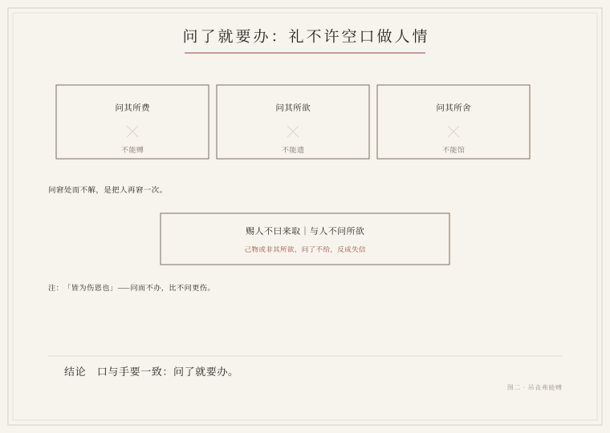

曲礼上 · 一·一百零三 · 第 101 课
吊丧而不能出赙，就不问丧家花了多少；问疾而不能馈赠，就不问病人想要什么；见行人而不能留宿，就不问其住处。赐人者不说「来取」，与人者不问其所欲。
说什么事：吊丧弗能赙，不问其所费；问疾弗能遗，不问其所欲；见人弗能馆，不问其所舍；赐人者不曰来取，与人者不问其所欲。
落在哪一层：礼意。四句一律：问而不办，是伤恩。
为何编在此位：上节言辞，此节言施。辞不可虚，施亦不可虚问。
【经】弔喪弗能賻，不問其所費。問疾弗能遺，不問其所欲。見人弗能館，不問其所舍。賜人者不曰來取，與人者不問其所欲。
【注】皆為傷恩也。見人，見行人。館，舍也。與人不問其所欲，己物或時非其所欲，將不與也。
赙 注《释文》引《公羊传》「钱财曰赙」，《穀梁传》「归生者曰赙」。以财物助丧。
所费 丧葬所耗。问之，则丧家须答，答而无所助，是逼人报账。
遗 馈也。问疾而遗，是带物往问。
馆 注「馆，舍也」。留客住宿。
见人 注「见人，见行人」。见路行之人。
不曰来取 赐物，不说让对方来拿，当自送往。
不问其所欲 注「己物或时非其所欲，将不与也」。问了却不能给，反成失信。
吊丧而不能出钱相助，就不问丧家花了多少；问病而不能带物，就不问病人想吃什么；遇见行人而不能留宿，就不问其住处；赐人物，不说「你来取」；赠人物，不问对方想要什么。
一节四句，同一句话反复：问了就要办。问而不办，比不问更伤。这四句讲的是「口」与「手」的一致——礼不许空口做人情。
第一层 问即是诺 问其所费、所欲、所舍，对方必以为你将有所助。问而不助，是许而不践。
第二层 所问之三事 费、欲、舍，皆对方的窘处。问窘处而不解，是把人再窘一次。
第三层 不曰来取 赐物而当自来。要人来取，是把己之惠变成人之劳。
第四层 不问其所欲 注说得很实：己物或非其所欲，问了不给，反成失信。所以宁可送一件不合用的，也不先许一句。
与今日何干 探望病人，别问「想吃什么」却空手；朋友搬家，别问「花了多少」却不帮。此节今日最常犯。
| 左 | 右 |
|---|---|
| 吊丧弗能赙 | 不问其所费 |
| 问疾弗能遗 | 不问其所欲 |
| 见人弗能馆 | 不问其所舍 |
| 赐人不曰来取 | 当自来取物，不命人奔走 |
| 与人不问所欲 | 问了不给，反成失信 |
| 皆为伤恩 | 问而不办，比不问更伤 |
画门口一段：门外有一人驻足之迹（两枚鞋印），门内案上放着两只已束好的素色包裹、一封帛书；门口地面干净、无迎客之席。示物已备而未问。不画人、不写文字。赭色只在帛书的封泥。
